From the Jewish calendar to sports clubs, and from student leadership to wellbeing: this is how the year unfolds at Theodoro Herzl School.
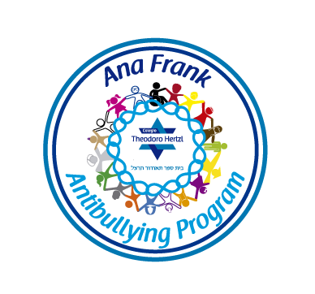
United within Difference is one of our flagship projects, aimed at strengthening positive relationships among students and creating strategies to prevent possible bullying situations. It has been the laboratory where young people can experience the effects of how they see themselves in order to transform behavior. Born from the painful experience of the Holocaust and in tribute to the life of Anne Frank, a young girl whose life ended due to antisemitism, this project has reached students at our school as well as young people at other educational institutions. In 2012, this project won second place nationally in the XVIII Santillana Award.
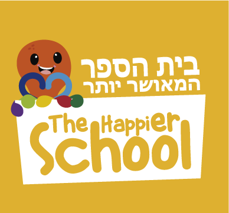
An interdisciplinary educational program whose purpose is to help the entire school community reach higher levels of happiness. In today's world, students need to learn more than reading, writing, and arithmetic. It is just as important that they learn to find a sense of purpose, care for their physical wellbeing, learn to grow from failure and adversity, foster healthy relationships, and cope with painful emotions while cultivating pleasant ones. These skills and capacities will contribute to students' overall psychological wellbeing, making them happier and playing a preventive role by reducing the likelihood of mental health issues both now and in the future. Additionally, students will perform better academically and, later on, professionally.
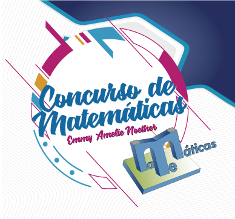
The Emmy Amalie Noether Mathematics Competition was born from the idea of organizing math olympiads in a more familiar setting. Its aim has been to propose exercises for students from Fourth to Twelfth grade, grouped by level. This competition has welcomed the participation of other educational institutions.
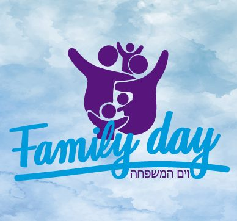
Family Day - Yom Tzedakah (a day of social justice to help others): an annual event bringing together all of our students' families. Over the course of a full day (Sunday), different activities take place to strengthen the bond among the entire school community. Funds raised are dedicated to a specific school project.
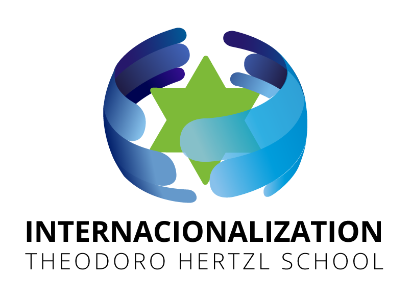
Leads international certification and/or accreditation processes, promoting actions focused on positioning the school internationally. It also manages and advises on international projects (trips, international university fairs, partnerships, among others).
Our calendar and school life are guided by the principles of Jewish culture, which encompass a broad view of the world. This includes celebrating holidays and understanding values and practices such as debate, analysis, and questioning. These elements have been a fundamental part of Judaism for more than two thousand years, joined by a variety of artistic expressions viewed from both a local and global perspective.
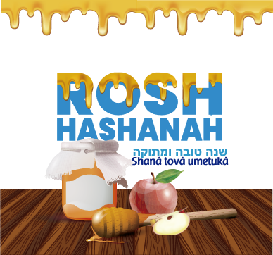
The creation of the world and the years that have passed since are celebrated on this date. Reflecting on the past year's actions, asking forgiveness from those we may have wronged, and a seder (a meal following a set order) with symbolic foods invoking abundance, leadership, and wellbeing are all part of this celebration.
In the days leading up to this solemn date, when we do not attend school, we remember the importance of our actions, of tzedakah (giving to others), repentance, and the possibility of renewal.
In Culture classes, teachers share the message of this holiday, which commemorates the courage of the few in defending their beliefs and traditions. Depending on when it falls, it is celebrated at our school.
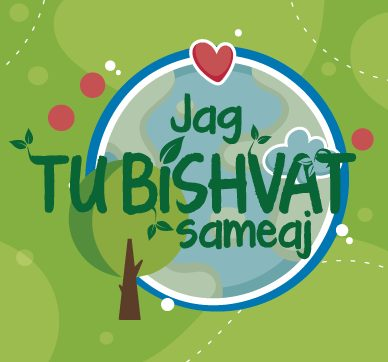
This holiday is known as the New Year of the Trees. Fruit is eaten, trees are planted, and reflections are shared on our relationship with nature and the care we owe it.
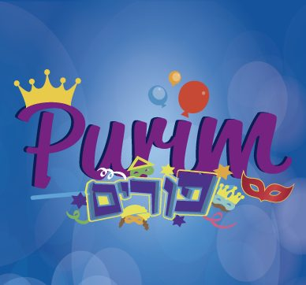
A woman named Esther is the protagonist of this holiday, which celebrates the salvation of the Jewish people from the extermination planned under the reign of Ahasuerus. Costumes, joy, student performances, contests, festive food, and gifts for friends and those in need are some of the elements seen at this celebration.
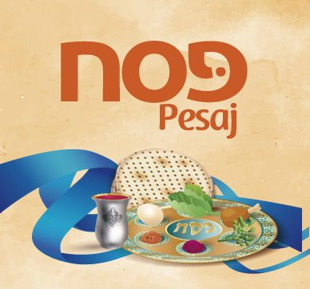
We remember the Jewish people's exodus from Egypt under the leadership of Moses. Foods characteristic of this holiday, such as matzah or grape juice, are shared at a seder (a meal following a specific order) where freedom is discussed, songs are sung, and meaningful texts are read.
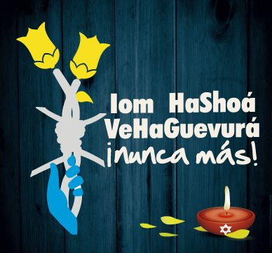
Sixth-grade Elementary and High School students take part in a solemn ceremony in which six torches are lit in memory of the six million Jews and people of other faiths who died during the Holocaust. Meaningful texts, testimonies, and reflections on respect for difference and tolerance are part of this commemoration.
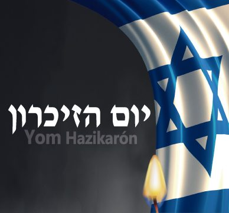
Sixth-grade Elementary and High School students come together in a ceremony remembering the more than 23,800 soldiers who fell in Israel's wars and the more than 3,000 victims of terrorism.
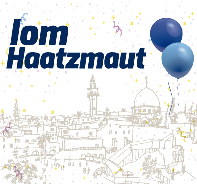
All students and school staff celebrate the anniversary of the independence of the State of Israel and the contributions this country has made to humanity. This date is also an opportunity to remember the relationship between Colombia and Israel.
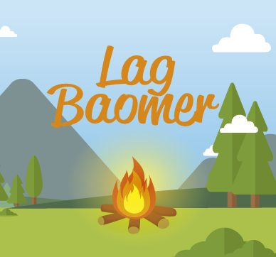
Marked with bonfires, outdoor outings, colorful t-shirts referencing fire, and reflections on Shimon Bar Yochai, the sage remembered on this holiday.
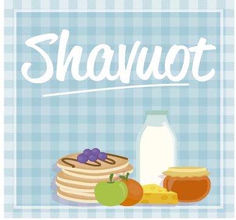
With a dairy breakfast symbolizing abundance, we mark this holiday commemorating the giving of the Torah and the weeks that have passed since Passover.
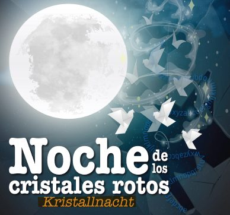
On November 9, 1938, many shops, homes, synagogues, and gathering places of the Jewish community were attacked across Europe. From then on, persecution intensified and the Holocaust took shape. We remember this dark night in history with a tribute to books, in which our students display their handcrafted books.
This is how we organize ourselves and build relationships within our school community. In accordance with Article 142 of Law 115 of 1994 and Articles 19 through 25 of Decree 1,860 of 1994, it fosters participation and democracy within a school setting.
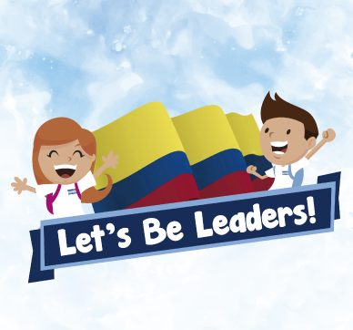
An activity where Preschool children get their first taste of choosing a school government.
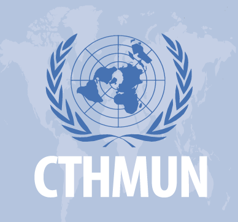
These are spaces for reflection where students become agents of change by analyzing issues of national and international impact. They then propose solutions that allow them to make a positive difference.
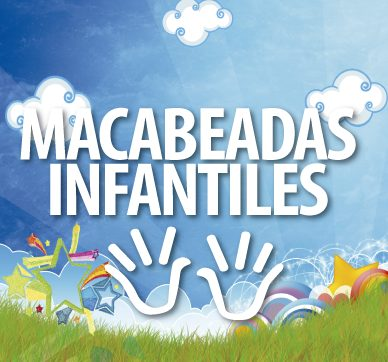
A sports event in which all Elementary groups take part in sports such as boys' soccer, boys' basketball, girls' swimming, and athletics. Other schools are also invited to compete against our students. The event is held on our own campus, using our sports facilities.
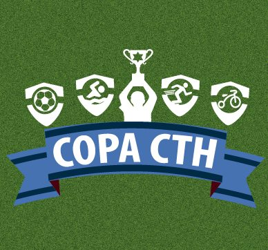
A sports event in which all High School groups take part in sports such as girls' soccer, boys' soccer, boys' basketball, girls' volleyball, and table tennis. The CTH Cup also welcomes guest schools that compete against our students, the home team.
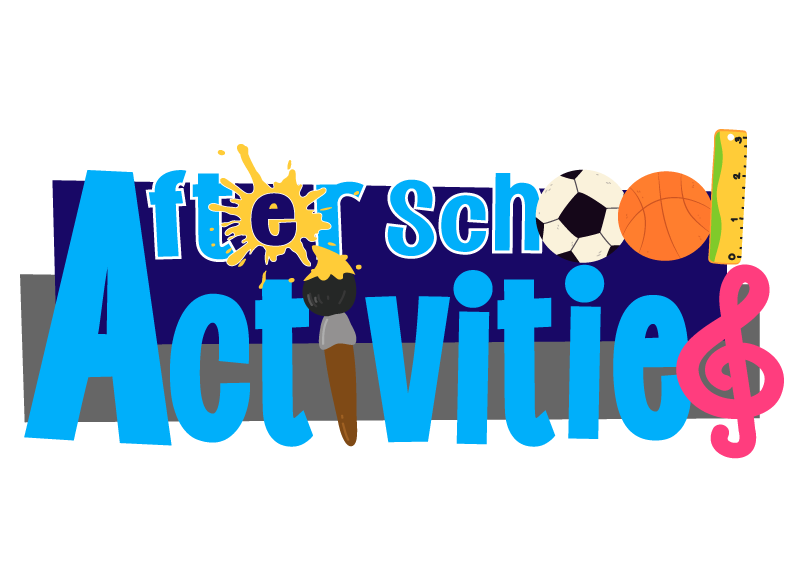
Seeking a balance between being and knowing, children and teens grow through childhood and adolescence without setting aside responsibility, thanks to activities offered after school hours. Some of these include soccer, basketball, volleyball, table tennis, chess, music, dance, theater, and visual arts.
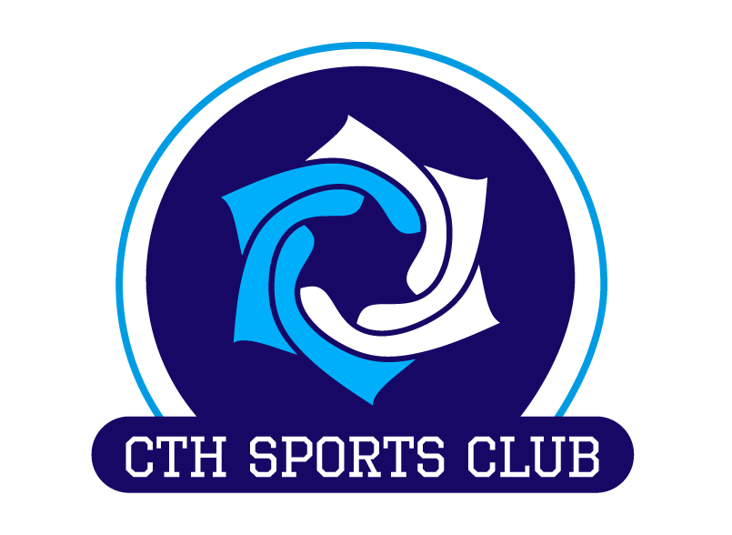
Sports and recreational activities are a fundamental part of education. The bond among each player, and the ultimate bond among all of them, creates a space to display their abilities with passion and camaraderie. Some of the training programs include: Baby sports, table tennis, skating, artistic gymnastics, soccer, athletics, basketball, and volleyball.
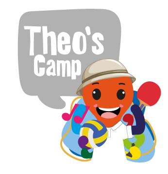
A recreational and sports vacation program for children and teens, featuring recreational, sports, and community-building activities during school breaks.
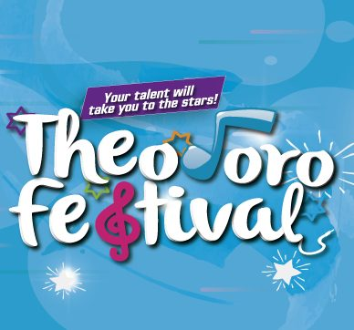
An institutional competition and program showcasing the musical talents of children and students from Preschool, Elementary, and High School.
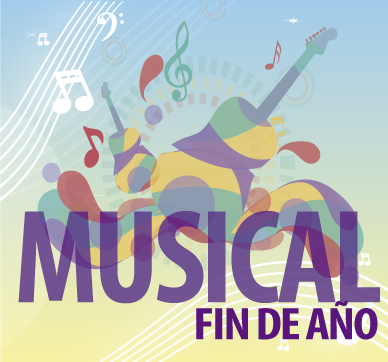
At the end of the year, our Musical takes place: children from Preschool, Elementary, and High School sing songs and perform dances that, under a chosen theme and guided by the Arts and Music area, treat parents to a show full of music, color, languages, and fun.
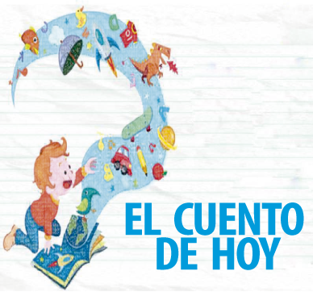
A space for writing and storytelling where students develop their creativity and imagination, bringing their own stories to life and later sharing them with the school community.
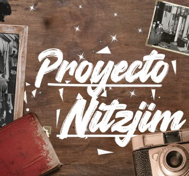
A writing program that fosters divergent thinking and narrative and poetic creativity. It also encourages graphic design and the use of handcrafted materials in making these books, which are exhibited at the close of Kristallnacht, the Night of Broken Glass.
Write to us and we'll gladly tell you how you or your family can get involved.